Good315.2%
Issue types
Bad "go well with"81.3%
Non-identifiable355.8%
Size / detail / texture mismatch284.7%
Other reasons193.2%
Similar-than reasoning81.3%
Text shortcut91.5%
Image error10.2%Unreviewed
Not flagged46176.8%
Issue types
✓ Positive example
Good 31 / 600 · 5.2%
#20
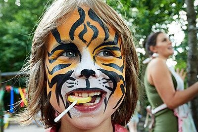
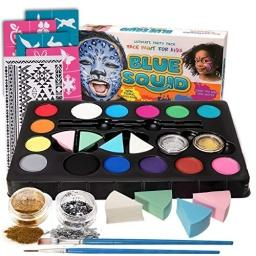
Instruction: What can I use to achieve this look?
Target caption & rationale
Target caption: A close-up shot of a professional face painter's kit, featuring a colorful palette of skin-safe water-based paints, a set of fine-tipped synthetic brushes, and a damp sponge on a wooden table.
Rationale: The query image shows a child with tiger face paint, which is the result of using a face painting kit. To retrieve the target image of a professional face painter's kit, the instruction asks for the tool or product neede…
#21
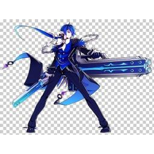
Instruction: Who would be a good opponent for her?
Target caption & rationale
Target caption: A dramatic portrait of a mystical antagonist in dark ornate armor, casting a contrasting blue ethereal shield to deflect an incoming red magical attack
Rationale: The query image depicts a character using red magical energy, likely a sorceress or mystical figure. The target image features a mystical antagonist with contrasting blue ethereal powers and armor, designed to deflect re…
#30
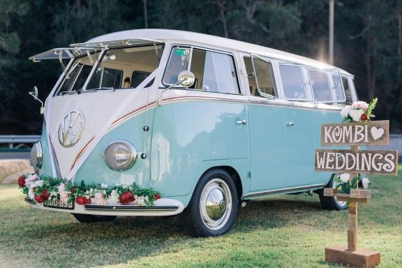
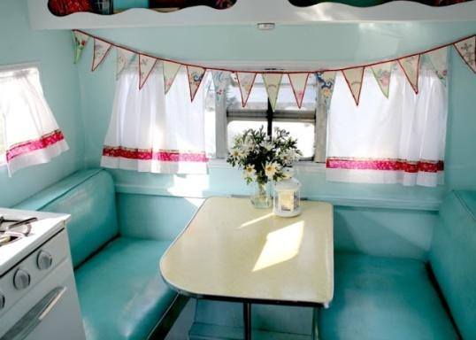
Instruction: What does the inside of it look like?
Target caption & rationale
Target caption: A cozy interior view of a retro camper van converted into a mobile photo booth, decorated with white lace curtains, fairy lights, and polaroid photos hanging on the walls
Rationale: The query image features a vintage Volkswagen camper van. The target caption describes the interior of a retro camper van. By asking for the 'inside' of the object in the query image, the user logically seeks a visual tr…
#38
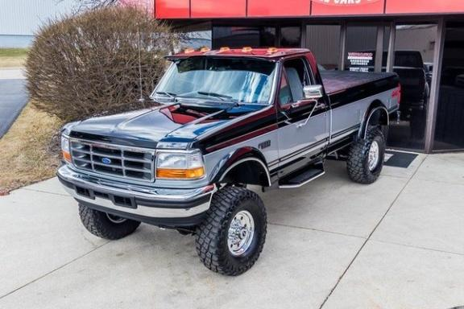
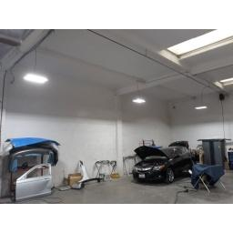
Instruction: Where can I take this to get it professionally polished?
Target caption & rationale
Target caption: A wide-angle shot of a professional automotive detailing workshop with a hydraulic lift and specialized polishing tools used for maintaining high-gloss metallic paint on trucks
Rationale: The query image shows a truck with a high-gloss metallic finish. To maintain or achieve such a look, a professional automotive detailing workshop is the logical destination. Therefore, the instruction asks for a place to…
#41
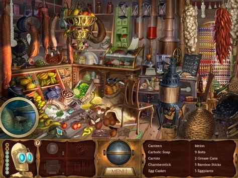
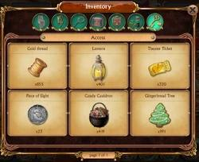
Instruction: Where can I see all the things I've collected so far?
Target caption & rationale
Target caption: A detailed inventory screen from a fantasy adventure game showing a grid of collected quest items like rusted keys, ancient scrolls, and glowing gemstones against a dark parchment background
Rationale: The query image shows a scene from a fantasy adventure game filled with various objects. The target caption describes an inventory screen containing collected quest items. Therefore, asking to see 'collected things' logi…
#42
Instruction: What else represents this season?
Target caption & rationale
Target caption: A detailed close-up photo of a cozy autumn scene with a steaming ceramic mug of cider and a knitted wool blanket resting on a rustic wooden porch surrounded by fallen maple leaves
Rationale: The query image depicts colorful autumn leaves, which strongly associates the visual content with the fall season. The target image shows a cozy autumn scene featuring pumpkins, a warm beverage, and a knitted blanket. By…
#44
Instruction: What should I wear to explore it?
Target caption & rationale
Target caption: A close-up, high-detail photo of a professional hiking boot with mud-caked soles and waterproof fabric, resting on a rocky lakeside trail, symbolizing the gear needed to explore the rugged terrain shown in the landscape.
Rationale: The query image shows a rugged landscape with hills and water, which implies an outdoor hiking environment. To explore such terrain, professional hiking boots (as seen in the target image) are the essential gear. By aski…
#48
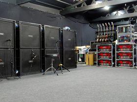
Instruction: Where is this usually kept when it's not being used?
Target caption & rationale
Target caption: A wide shot of a concert venue's backstage area showing equipment flight cases, guitar racks, and amplifier stacks lined up for a touring band's technical setup
Rationale: The query image depicts a band performing live on stage with instruments and amplifiers. The target image shows the backstage area where that specific equipment (guitars, amps, flight cases) is stored and managed. By ask…
#59
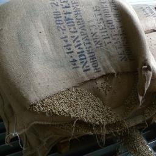
Instruction: Where does this come from?
Target caption & rationale
Target caption: A close-up of a gourmet coffee bean assortment spilling out of a burlap sack next to a professional espresso machine in a modern cafe setting
Rationale: The query image shows a prepared cup of coffee. To retrieve the target image, I identify the raw material of the beverage, which is coffee beans. By asking 'where does this come from', the user is prompting for the origi…
#68
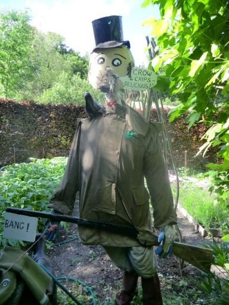
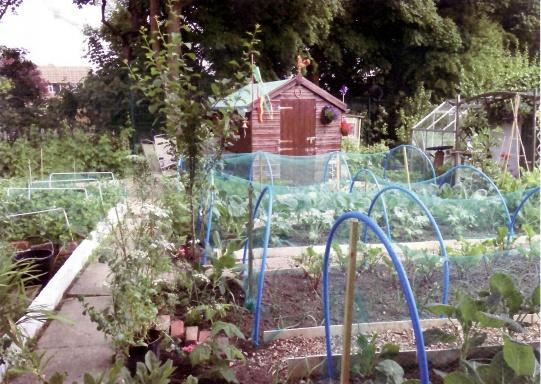
Instruction: Are there any other ways to do this?
Target caption & rationale
Target caption: A wide shot of a rustic garden featuring a large, colorful reflective holographic scare tape ribbon fluttering in the wind, tied to a wooden trellis amidst rows of growing vegetables
Rationale: The query image shows a traditional scarecrow used for pest control in a garden. The target image depicts a garden using holographic scare tape, which is a modern alternative for the same purpose. By asking for 'other wa…
#72
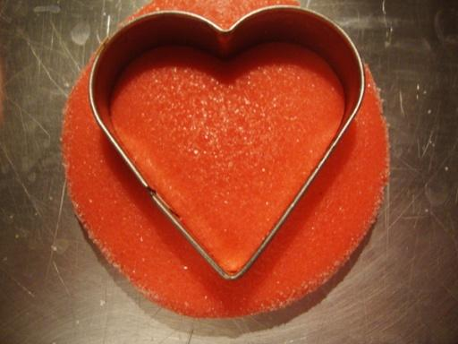
Instruction: How is this made?
Target caption & rationale
Target caption: A close-up photo of a heart-shaped candy mold and melted red sugar syrup on a kitchen counter, showing the process of making heart lollipops
Rationale: The query image shows a person holding heart-shaped lollipops, and the target image depicts the production process using a heart-shaped mold and red sugar syrup. By asking how the item in the query image is made, the use…
#74
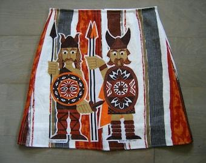
Instruction: What is a real version of that headwear?
Target caption & rationale
Target caption: A detailed close-up photo of an authentic iron Viking age helmet with a nasal guard and leather chin strap, resting on a weathered wooden table next to a forged steel sword
Rationale: The query image features a stylized depiction of Viking warriors wearing horned helmets. The target image shows an authentic Viking age iron helmet. By asking for a 'real version' of the 'headwear' depicted in the art, t…
#142
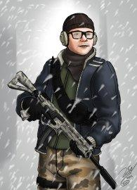
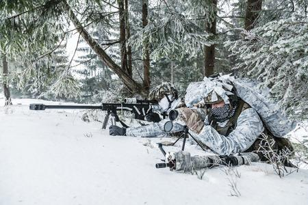
Instruction: What is a more professional version of this gear?
Target caption & rationale
Target caption: A high-resolution image of a specialized long-range sniper rifle equipped with a winter camouflage wrap and a high-magnification scope, resting on a bipod in a frost-covered forest
Rationale: The query image depicts a character with a basic rifle in a snowy setting. By asking for a 'professional version,' the user is seeking high-end, specialized equipment designed for that specific environment. This leads to…
#195
Instruction: Where can I visit that is associated with this logo?
Target caption & rationale
Target caption: A wide-angle shot of the Church of the Holy Sepulchre in Jerusalem, showing the ancient stone architecture and pilgrims entering the courtyard
Rationale: The query image contains a logo for 'MyJerusalemStore' featuring a lion and a cross, which strongly associates it with the city of Jerusalem and its religious significance. The target image depicts the Church of the Holy…
#196
Instruction: What does this leave behind after it hits the ground?
Target caption & rationale
Target caption: A high-resolution close-up of charred earth and fused fulgurite glass tubes formed by a lightning strike in a sandy desert landscape
Rationale: The query image shows lightning strikes over a landscape. The target image depicts fulgurites, which are natural glass tubes formed when lightning strikes sand or soil. By asking what is 'left behind' after the event sho…
#207
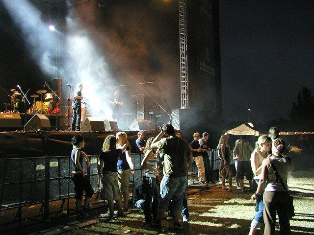
Instruction: What would it look like from the opposite perspective?
Target caption & rationale
Target caption: A wide-angle shot of a professional music stage with large speaker stacks, monitors, and microphones, viewed from the perspective of the performers looking out toward a blurred crowd
Rationale: The query image shows a crowd of people attending an outdoor event, likely a concert, from the perspective of someone in the crowd. The target caption describes a professional music stage viewed from the perspective of t…
#247
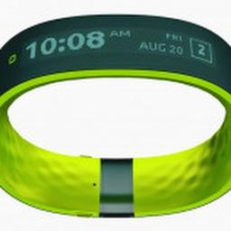
Instruction: What else can he use to track his progress?
Target caption & rationale
Target caption: A high-angle close-up of a digital fitness tracker or smartwatch on a wrist showing a heart rate monitor and calories burned during a workout
Rationale: The query image shows a person exercising on a treadmill, establishing a fitness context. The target caption describes a fitness tracker used for monitoring heart rate and calories during a workout. Therefore, asking for…
#302
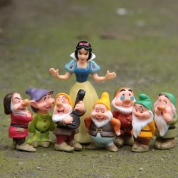
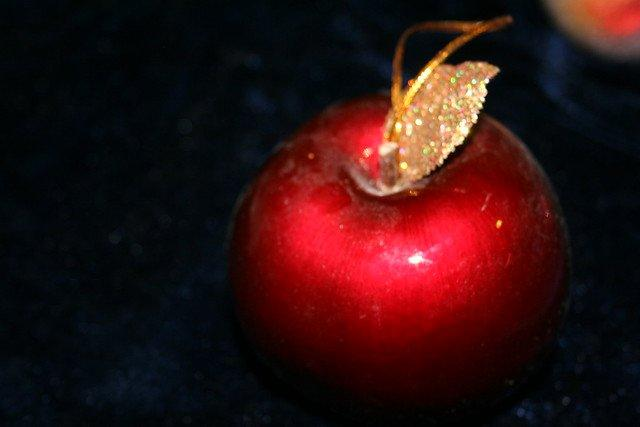
Instruction: What is the most iconic item associated with them?
Target caption & rationale
Target caption: A high-resolution image of a polished red apple with a single green leaf, resting on a rustic wooden table, symbolizing the central plot device of the Snow White fairy tale.
Rationale: The query image features Snow White and the Seven Dwarfs, characters from a famous fairy tale. The target image is a red apple, which is the central plot device and most recognizable symbol linked to this story. By askin…
#305
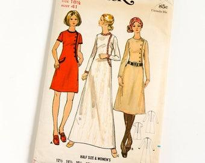
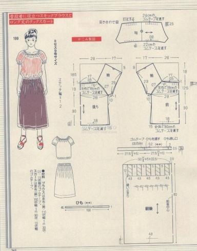
Instruction: Can you show me the technical layout for making this?
Target caption & rationale
Target caption: A detailed close-up image of a vintage sewing pattern's tissue paper layout with marked cutting lines and instructional symbols, showing the technical structural components required to assemble the dresses
Rationale: The query image displays a vintage sewing pattern cover showing the final garment designs. The target image is the internal technical page of a sewing pattern, showing the cutting lines and layout necessary to construct…
#312
Instruction: What powers this suit?
Target caption & rationale
Target caption: A detailed close-up shot of an electronic circuit board and a glowing arc reactor core, showcasing the internal engineering and energy source of a high-tech exosuit
Rationale: The query image shows a person in an Iron Man costume, and the target image depicts an arc reactor, which is the fictional energy source that powers the suit. By asking about the power source, the user logically links th…
#325
Instruction: What equipment do they typically use for this?
Target caption & rationale
Target caption: A close-up of a high-performance wireless in-ear monitor system and a handheld stage microphone resting on a velvet cloth, focusing on the technical gear used by performers
Rationale: The query image shows professional musicians performing on stage. Based on the target caption, which describes a handheld stage microphone and monitoring gear, I reason that a human would ask about the technical equipmen…
#340
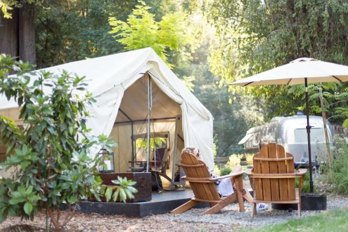
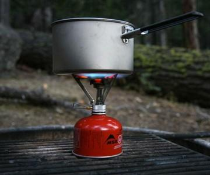
Instruction: What else do I need for this trip?
Target caption & rationale
Target caption: A close-up shot of a portable camping stove with a stainless steel pot boiling water, placed on a wooden picnic table in a wooded glamping area
Rationale: The query image depicts a glamping setup with a tent and chairs, establishing the context of an outdoor camping trip. To retrieve the target image, which shows a portable camping stove, the instruction asks for additiona…
#371
Instruction: What does this place look like after the sun goes down?
Target caption & rationale
Target caption: A high-angle wide shot of a coastal town's cliffside architecture at dusk, with warm interior lights glowing from windows and a dark navy ocean meeting the shore
Rationale: The query image shows a coastal town during a vibrant sunset. The target image depicts the same type of coastal architecture and landscape at dusk/night with glowing lights. By asking what the place looks like after suns…
#384
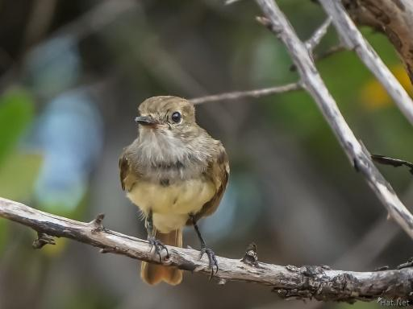
Instruction: What does it usually eat?
Target caption & rationale
Target caption: A detailed macro shot of a small insect, such as a dragonfly or beetle, perched on a thin twig, representing the primary prey source for a small insectivorous bird
Rationale: The query image shows a small insectivorous bird. According to the target caption, the target image depicts a dragonfly, which serves as a primary prey source for such a bird. Therefore, asking about the bird's diet logi…
#424
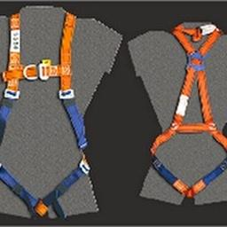
Instruction: What gear is used to keep them together during this activity?
Target caption & rationale
Target caption: A detailed image of a tandem skydiving harness system laid out on a grassy airfield, showing the heavy-duty straps, buckles, and the reserve parachute deployment handle
Rationale: The query image shows two people performing a tandem skydive. To retrieve the target image, I identified the specialized equipment required for this specific activity—the tandem harness. By asking what gear keeps the ind…
#425
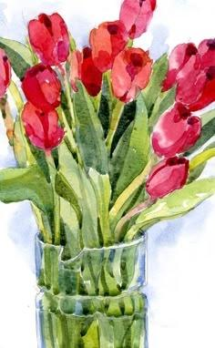
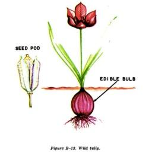
Instruction: How does this flower grow from the start?
Target caption & rationale
Target caption: A detailed botanical illustration showing the lifecycle of a tulip, from a dormant brown bulb underground to a sprouting shoot and finally a full red bloom
Rationale: The query image shows a bouquet of red tulips. The target image is a botanical illustration detailing the lifecycle of a tulip, including the bulb and growth stages. By asking how the flower grows from the start, the use…
#447
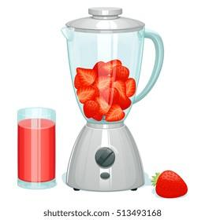
Instruction: What can I use to make this?
Target caption & rationale
Target caption: A high-speed blender filled with fresh frozen strawberries, raspberries, and orange slices, showing the raw ingredients before being blended into a smoothie
Rationale: The query image shows a finished berry smoothie, while the target image depicts the raw ingredients (berries) inside a blender. By asking what tool is used to create the drink, the user logically bridges the final produc…
#465
Instruction: Where would this person typically be found?
Target caption & rationale
Target caption: A wide shot of an empty, dimly lit gothic cathedral interior with rows of wooden pews and a single beam of light falling on a stone confession booth
Rationale: The query image shows a man in religious attire in a posture of prayer or confession. To find a corresponding environment, I link the subject's identity and action to a gothic cathedral, which is the architectural and fu…
#473
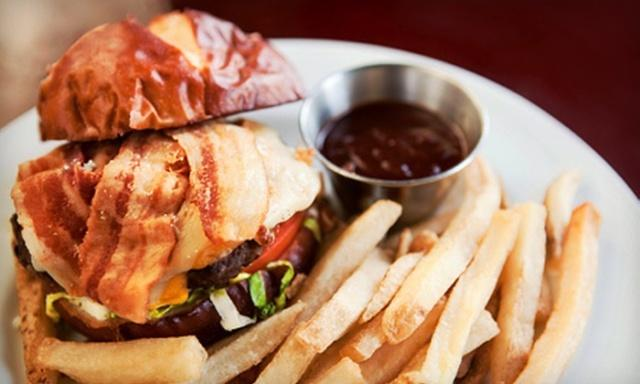
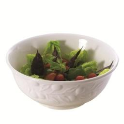
Instruction: What would be a healthier option to pair with this?
Target caption & rationale
Target caption: A professional culinary photo of a gourmet side salad featuring mixed baby greens, cherry tomatoes, cucumber slices, and a light vinaigrette in a small white porcelain bowl
Rationale: The query image shows a calorie-dense meal consisting of a bacon burger and fries. To find the target image, I identify the need for a nutritional balance or a 'healthier' alternative to the deep-fried sides, leading to…
#481
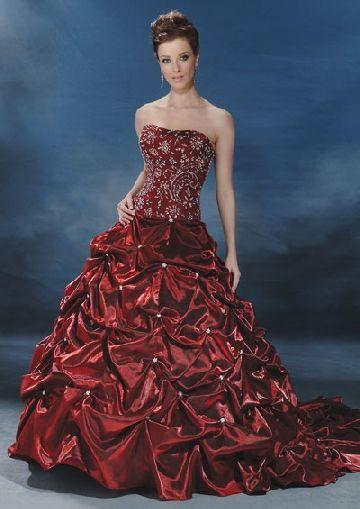
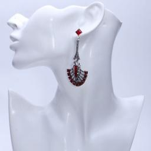
Instruction: What would go well with this?
Target caption & rationale
Target caption: A close-up detailed shot of sparkling silver rhinestone earrings and a matching delicate necklace set against a velvet jewelry display, complementing the formal elegance of a red evening gown
Rationale: The query image features a formal red evening gown, which establishes a context of high-fashion elegance. The target caption describes jewelry that complements such a dress. By asking what would 'go well with' the item,…
#523
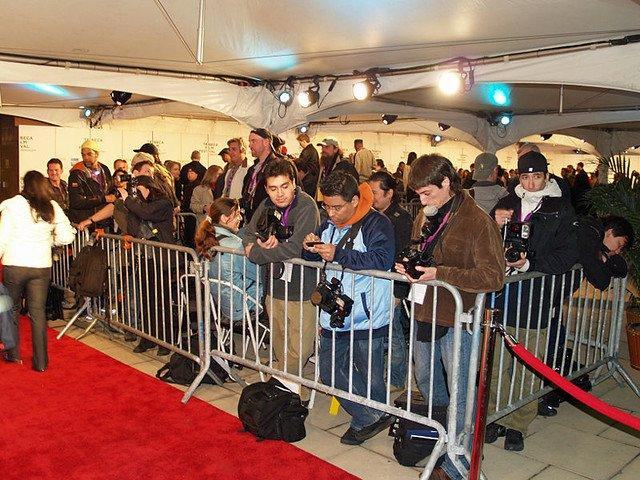
Instruction: Where would this typically be seen?
Target caption & rationale
Target caption: A wide-angle shot of a glamorous red carpet event entrance with flashing paparazzi cameras and a velvet rope queue for celebrity arrivals
Rationale: The query image features a luxury stretch limousine, which is a vehicle strongly associated with high-profile events and celebrity transportation. The target image depicts a red carpet event with paparazzi, which is the…
⚠ Issue type
Bad "go well with" 8 / 600 · 1.3%
#5
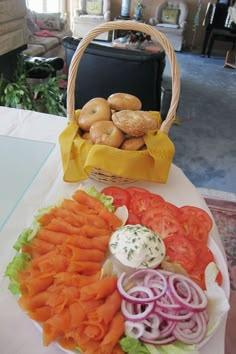
Instruction: What would go well with this for a meal?
Target caption & rationale
Target caption: An elegant brunch table setting featuring a platter of smoked salmon bagels and fresh fruit, with several glasses of orange-colored sparkling cocktails in the background to show the meal pairing
Rationale: The query image shows orange-colored sparkling cocktails, which are classic beverage pairings for a brunch. By identifying the drink as a brunch staple, the instruction asks for a complementary food pairing, leading to t…
#11
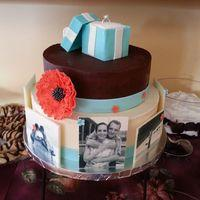
Instruction: What else could I get to go along with this?
Target caption & rationale
Target caption: A celebratory gift basket containing a bottle of champagne, a box of luxury chocolates, and a small bouquet of red poppies, arranged in a decorative wicker hamper
Rationale: The query image shows a custom celebratory cake, which establishes a theme of a special occasion or gift-giving. The target caption describes a luxury gift basket with champagne and chocolates, which serves as a compleme…
#35
Instruction: What else is typically found in such an environment?
Target caption & rationale
Target caption: A wide-angle shot of a remote high-altitude mountain peak at dawn, featuring a weather station and atmospheric monitoring equipment used for astronomical site testing
Rationale: The query image shows an astronomical observatory, which is typically located in remote, high-altitude areas with clear skies. The target image depicts a weather station used for atmospheric monitoring in a similar remot…
#40
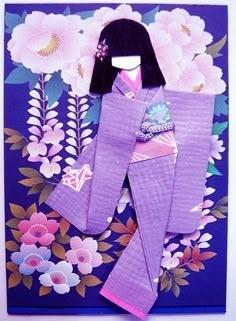
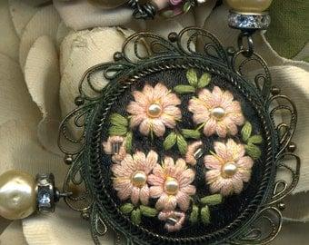
Instruction: What accessory would go well with this?
Target caption & rationale
Target caption: A high-resolution close-up photo of an ornate Japanese kanzashi hair ornament made of silk flowers and dangling beads, resting on a traditional lacquer tray
Rationale: The query image features a traditional Japanese doll dressed in a kimono. Since the target image depicts a kanzashi (a traditional Japanese hair ornament), it serves as a logically matching accessory for the attire shown…
#503
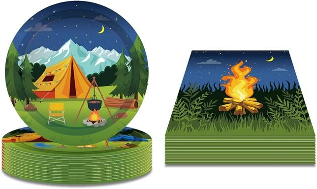
Instruction: What could I use to cook with while using these?
Target caption & rationale
Target caption: A close-up photo of a heavy-duty portable camping stove with a stainless steel pot boiling water over a blue gas flame, set on a rustic wooden picnic table in a pine forest
Rationale: The query image shows camping-themed party plates, which establishes a camping context. The target image depicts a portable camping stove, which is the functional tool used for cooking in that specific setting. By asking…
#517
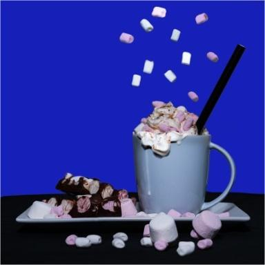
Instruction: What would be a perfect setting to enjoy this?
Target caption & rationale
Target caption: A close-up shot of a cozy winter scene featuring a lit fireplace with a wool blanket draped over a wooden chair and a pair of fuzzy slippers on a rug
Rationale: The query image shows hot chocolate with marshmallows, which is a classic comfort drink associated with cold weather. The target image depicts a cozy indoor winter scene with a fireplace and blankets, which provides the…
#545
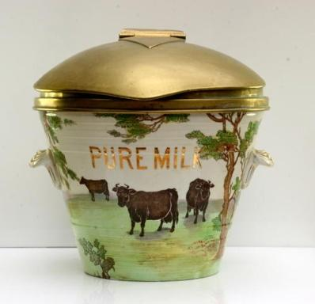
Instruction: What goes with this?
Target caption & rationale
Target caption: A close-up of an antique brass milk ladle with a long curved handle and decorative floral carvings, resting inside a porcelain basin
Rationale: The query image depicts an antique milk canister. To find a complementary object, I associate the canister with the tool typically used to serve its contents, which is a milk ladle. By asking what 'goes with' the item, t…
#555
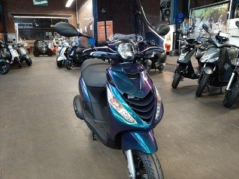
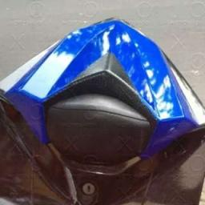
Instruction: What would go well with it?
Target caption & rationale
Target caption: A close-up detailed shot of a high-performance motor scooter helmet with a matching iridescent blue and purple metallic finish, resting on a leather seat
Rationale: The query image shows a motor scooter with a distinct iridescent blue and purple metallic finish. The target image depicts a high-performance helmet with a matching color scheme and finish. By asking what would 'go well'…
⚠ Issue type
Non-identifiable 35 / 600 · 5.8%
#10
Instruction: What other dishes are similar to this?
Target caption & rationale
Target caption: A high-angle shot of a traditional Indian tandoori platter featuring charred chicken tikka and seekh kebabs served with a side of sliced red onions, lemon wedges, and a bowl of fresh mint chutney on a rustic wooden board
Rationale: The query image shows a variety of Indian food, including tandoori-style chicken and naan. The target image depicts a tandoori platter with chicken tikka and kebabs. By asking for similar dishes, the user is prompting fo…
#24
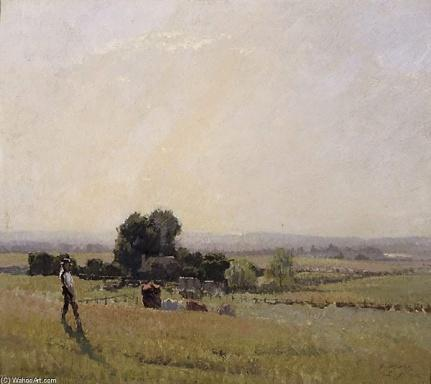
Instruction: Could you show me more artwork from this same area?
Target caption & rationale
Target caption: A wide landscape painting depicting a bustling village market in the same region during harvest season, featuring numerous peasants in traditional attire trading grains and vegetables under a bright, hazy sky.
Rationale: The query image is a painting of a rural landscape with a figure, and the target image is a painting of a village market in the same region. By asking for more artwork from the same area, the user leverages the geographi…
#70
Instruction: Where else can I find this kind of vegetation?
Target caption & rationale
Target caption: A wide landscape shot of a tropical botanical garden featuring various species of endemic red-flowering shrubs and towering palms under a bright sunny sky
Rationale: The query image features a unique red-flowering tropical tree in a hilly landscape. By identifying it as tropical flora, the instruction asks for similar environments, leading to the retrieval of a tropical botanical gar…
#115
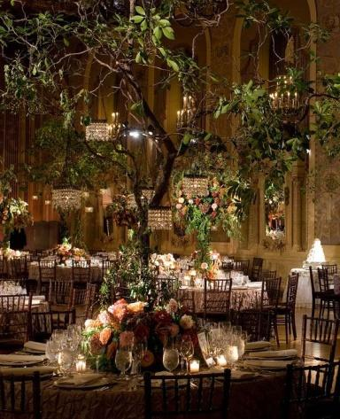
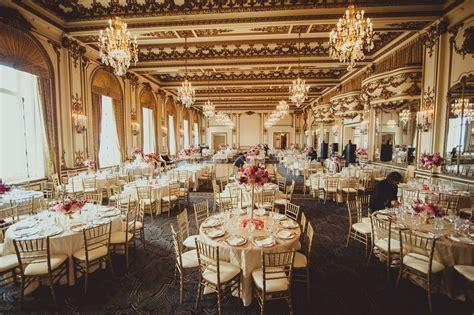
Instruction: What does this space look like without the decorations?
Target caption & rationale
Target caption: A wide-angle shot of an empty neoclassical ballroom with high vaulted ceilings, ornate gold moldings, and large arched windows, showing the architectural space before event decorations are installed.
Rationale: The query image shows a ballroom heavily decorated for an event with large floral arrangements and trees. The target image depicts the same architectural space (a neoclassical ballroom) in its base state without the even…
#123
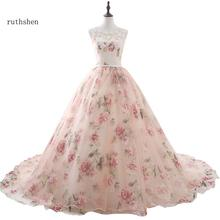
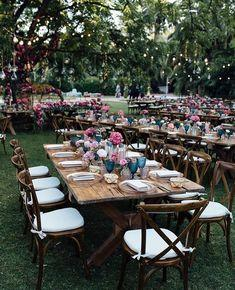
Instruction: What kind of event would this be perfect for?
Target caption & rationale
Target caption: A romantic outdoor garden party setting with white folding chairs and floral centerpieces featuring pink roses and eucalyptus leaves
Rationale: The query image shows a formal, floral-patterned gown, which is typically worn to romantic or celebratory occasions like weddings or garden parties. By asking for the event type, the user seeks a situational context that…
#138
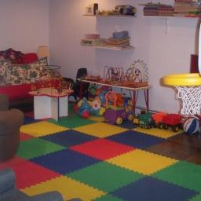
Instruction: Where would this group typically spend their time?
Target caption & rationale
Target caption: A soft-focus photograph of a diverse community childcare center with caregivers and multiple infants interacting in a safe, padded indoor play area with primary-colored mats
Rationale: The query image depicts a diverse group of caregivers and infants, which signifies a childcare or nursery setting. The target image shows a professional indoor play area equipped with padded mats and toys designed for in…
#204
Instruction: What would be a suitable accessory for this?
Target caption & rationale
Target caption: A high-angle studio photograph of a vintage leather automotive tool kit and a handheld tire pressure gauge from the 1930s laid out on a workbench
Rationale: The query image shows a vintage car from approximately the 1930s. The target image contains a vintage automotive tool kit from the same era. By asking for a suitable accessory, the logic connects the vehicle to the perio…
#226
Instruction: What is the result of his work?
Target caption & rationale
Target caption: A close-up shot of a professional coffee roaster's hand holding a handful of medium-brown roasted coffee beans, showing the oily texture and uniform color against a blurred background of industrial roasting machinery
Rationale: The query image shows a professional coffee roaster in his workplace. By associating his profession with the end product of the roasting process described in the target caption, the instruction asks for the result of his…
#228
Instruction: What would pair well with this?
Target caption & rationale
Target caption: A top-down view of a glass of crisp, chilled Sauvignon Blanc wine standing next to a Mediterranean-style grilled salmon platter on a restaurant table
Rationale: The query image shows a grilled salmon dish, which is a classic protein associated with Mediterranean cuisine. According to the target caption, the target image features a similar salmon platter accompanied by a glass of…
#266
Instruction: Where else can I find a space like this?
Target caption & rationale
Target caption: A wide-angle shot of a modern urban pedestrian plaza with integrated accessible ramps and tactile paving for visually impaired navigation, featuring contemporary street furniture and shaded seating areas
Rationale: The query image shows an urban pedestrian environment with stairs and walkways. The target image depicts a modern urban pedestrian plaza. By asking for another space 'like this', the user is requesting a similar function…
#308
Instruction: What are they reading from?
Target caption & rationale
Target caption: A close-up shot of an open music folder on a music stand, showing handwritten annotations and highlighted lyrics of a choral arrangement for a community choir
Rationale: The query image shows a group of people singing from sheets of paper, identifying them as a choir. The target caption describes a close-up of a choral arrangement in a music folder. By asking what they are reading, the u…
#315
Instruction: What could she give to him as a gift?
Target caption & rationale
Target caption: A close-up photo of a small, colorful wildflower bouquet resting on a rustic wooden table, suggesting a gift a child might have gathered for their father during a meadow walk.
Rationale: The query image shows a young girl and her father in a meadow, establishing a familial bond and a specific outdoor setting. The target image depicts a rustic bouquet of wildflowers, which logically connects as a thoughtf…
#365
Instruction: Where would be a great place to take this for a drive?
Target caption & rationale
Target caption: An expansive aerial view of a winding mountain road through a pine forest during autumn, illustrating the high-performance touring and all-wheel-drive capabilities of a luxury vehicle
Rationale: The query image shows a high-end luxury SUV known for its performance and all-wheel-drive capabilities. To retrieve the target image, I create a request for a suitable driving environment that matches the vehicle's natur…
#373
Instruction: What was used to make this?
Target caption & rationale
Target caption: A detailed close-up of a sewing machine stitching a gold metallic fabric and a red checkered ribbon for a costume project
Rationale: The query image shows a child wearing a handmade costume featuring gold metallic fabric and a red checkered ribbon. The target image depicts a sewing machine, which is the primary tool used to construct such a garment. B…
#397
Instruction: Where would this look best?
Target caption & rationale
Target caption: A serene interior shot of a child's bedroom where several handmade positive affirmation ornaments are hanging from a bedpost or window frame
Rationale: The query image shows a handmade 'be kind' affirmation ornament. The target image depicts a child's bedroom featuring similar positive affirmation decorations. By asking where the item would 'look best,' the user is seek…
#402
Instruction: Can you show me a close-up of one of those?
Target caption & rationale
Target caption: A high-resolution close-up detail of a single ripe apple held in a hand, emphasizing the texture of the fruit's skin and the grip of the fingers, styled as a Renaissance oil painting study
Rationale: The query image depicts three women holding apples in a Renaissance painting. The target image is a detailed close-up of a hand holding an apple from a similar artistic style. By asking for a close-up of 'one of those,'…
#426
Instruction: What does the inside of this look like?
Target caption & rationale
Target caption: A luxury sports car interior detail showing red leather perforated racing seats with contrasting white stitching and a carbon fiber dashboard trim
Rationale: The query image shows a high-end red automotive wheel, which identifies the subject as a luxury or performance vehicle. The target caption describes a matching luxury sports car interior with red accents and carbon fiber…
#431
Instruction: What else can I use to decorate for this occasion?
Target caption & rationale
Target caption: A detailed view of a singular, ornate crystal snowflake ornament hanging from a pine branch, backlit by a soft blue bokeh background of winter garden lights
Rationale: The query image features glowing reindeer lights, which strongly associates the scene with Christmas/winter holiday celebrations. The target caption describes a snowflake ornament, which is another common decorative item…
#487
Instruction: What would be a suitable dish to serve here?
Target caption & rationale
Target caption: A detailed overhead shot of a gourmet wedding plated meal consisting of a seared scallop with saffron puree and micro-greens, set on a white porcelain plate with polished silver cutlery
Rationale: The query image depicts a lavishly decorated wedding reception hall, establishing a high-end celebratory event context. To retrieve the target image, which shows a gourmet plated meal, the instruction asks for a food rec…
#488
Instruction: What shoes would go well with this?
Target caption & rationale
Target caption: A pair of pointed-toe nude suede pumps with a slim heel, positioned next to a small clutch bag, representing formal footwear suitable for a garden party ensemble
Rationale: The query image shows a feminine, floral skirt. Based on the target caption, the target image contains formal nude pumps suitable for a garden party ensemble. By asking for matching footwear, the user creates a logical l…
#491
Instruction: What can I use to keep it looking this shiny?
Target caption & rationale
Target caption: A professional automotive photography shot of a classic car detailing kit laid out on a workbench, including microfiber cloths, high-gloss carnauba wax, chrome polishing compound, and a dual-action polisher
Rationale: The query image shows a classic car with a high-gloss, reflective black finish. To maintain such a polished appearance, a car detailing kit (as seen in the target image) is the logical tool required. The instruction asks…
#497
Instruction: What is a more contemporary alternative to this?
Target caption & rationale
Target caption: A wide-angle shot of a modern luxury waterfront villa featuring floor-to-ceiling glass walls, a minimalist concrete structure, and a sleek infinity pool merging with the ocean horizon
Rationale: The query image shows a traditional, castle-like waterfront structure. To retrieve the target image, which is a modern luxury waterfront villa, the instruction asks for a 'contemporary alternative,' bridging the two by c…
#499
Instruction: What would go well with this?
Target caption & rationale
Target caption: A pair of elegant champagne-colored satin high-heeled pumps with a pointed toe and slim stiletto heel, placed on a plush white faux-fur rug
Rationale: The query image shows a champagne-colored formal dress. To retrieve the target image, which features champagne-colored satin pumps, the instruction asks for matching accessories. By identifying the color and formality of…
#506
Instruction: What would go well with this to complete the set?
Target caption & rationale
Target caption: A close-up of a weathered leather alchemy journal open to a page showing sketches of herbal ingredients and brewing temperatures
Rationale: The query image shows a cauldron, which is a primary tool for alchemy or witchcraft. To complete a thematic set associated with these practices, an alchemy journal (as described in the target caption and shown in the tar…
#511
Instruction: What can be used to maintain this?
Target caption & rationale
Target caption: A close-up shot of a vintage motorcycle toolkit and a greasy rag resting on a weathered wooden workbench, featuring various wrenches and screwdrivers used for maintenance
Rationale: The query image shows a person with a motorcycle, which establishes the subject as a vehicle requiring maintenance. The target image depicts a toolkit containing various wrenches and tools specifically used for mechanica…
#522
Instruction: What would go well with these?
Target caption & rationale
Target caption: A high-angle shot of an elegant, floor-length ivory lace wedding gown draped over a vintage velvet mannequin, featuring intricate floral embroidery that matches the fabric petals of the shoes
Rationale: The query image shows a pair of formal, floral-embellished bridal shoes. Based on the target caption describing a wedding gown with matching floral embroidery, the logical relationship is one of a coordinated outfit. The…
#533
Instruction: What should I call if this breaks down?
Target caption & rationale
Target caption: A high-resolution close-up of a heavy-duty industrial tow truck with a flatbed, designed for transporting disabled luxury vehicles
Rationale: The query image shows a luxury supercar with a 'no' symbol over it, implying a failure or a restriction. Since the target image depicts a heavy-duty tow truck designed for transporting such vehicles, the instruction asks…
#551
Instruction: What else can I put inside of it to make it more luxurious?
Target caption & rationale
Target caption: A close-up shot of a luxury glamping equipment set, including a thick folded bohemian rug, several plush velvet throw pillows in dusty rose and gold, and a portable warm lantern for interior tent lighting
Rationale: The query image shows a decorated glamping tent, establishing a theme of outdoor luxury camping. The target caption describes high-end interior glamping equipment such as bohemian rugs, plush pillows, and lanterns. There…
#569
Instruction: What does this person use for his work?
Target caption & rationale
Target caption: A high-contrast image of a vintage iron forge with glowing embers and a heavy hammer resting on an anvil, representing the tools of the character's profession
Rationale: The query image depicts a character whose rugged appearance and attire suggest a blacksmith or craftsman. The target caption specifies an iron forge, which is the primary professional tool for such a character. By asking…
#573
Instruction: What would be a good way for them to spend the rest of their day?
Target caption & rationale
Target caption: A high-angle shot of a wicker picnic basket overflowing with sandwiches, fruit, and a thermos, set upon a checkered cloth in a lush green riverbank meadow.
Rationale: The query image depicts two anthropomorphic characters on a leisurely bicycle ride in nature. I associate this activity with outdoor leisure and relaxation. Since the target caption describes a picnic setup in a meadow,…
#575
Instruction: What did they use to find their way?
Target caption & rationale
Target caption: An ancient weathered parchment map of the Arabian Peninsula with ink-drawn trade routes and calligraphy, illuminated by a flickering candle
Rationale: The query image depicts a caravan of camels traveling through a desert, which strongly evokes the historical context of trade and travel across the Arabian Peninsula. To answer how these travelers navigated, the logical…
#590
Instruction: What is typically found inside of it?
Target caption & rationale
Target caption: A close-up shot of a traditional Scandinavian sauna stove with hot stones and a wooden bucket of water, showing a functional amenity typically found in this type of rural retreat
Rationale: The query image shows a traditional Scandinavian log cabin in a rural setting. Based on the target caption, these types of retreats often feature a traditional sauna. Therefore, asking what is found 'inside of it' logica…
#594
Instruction: Where can I find the cabling that powers this setup?
Target caption & rationale
Target caption: A close-up high-resolution shot of a professional XLR cable patch bay with numerous multicolored cables plugged into a dense grid of jacks, representing the routing infrastructure of a recording studio
Rationale: The query image shows a complete recording studio with a mixing console and various outboard gear. The target caption describes a professional XLR cable patch bay, which is the underlying routing infrastructure that conn…
#595
Instruction: What is this made of?
Target caption & rationale
Target caption: A close-up shot of a sustainable bamboo fabric swatch showcasing a breathable, lightweight weave in a neutral beige tone, emphasizing the material quality used for summer leisurewear
Rationale: The query image shows a person wearing a lightweight, patterned summer outfit. By asking about the material ('What is this made of?'), the reasoning connects the finished garment to the raw material shown in the target i…
#599
Instruction: What does it look like inside?
Target caption & rationale
Target caption: An interior view of a rustic wooden wagon box containing cast-iron cookware, rolled wool blankets, and wooden crates of supplies
Rationale: The query image shows a covered wagon, which is a vehicle designed for transport and living. The target caption describes the interior of a wagon box filled with supplies and cookware. By asking 'What does it look like i…
⚠ Issue type
Size / detail / texture mismatch 28 / 600 · 4.7%
#4
Instruction: Where would this be taken for a spin?
Target caption & rationale
Target caption: A wide-angle shot of a paved drag strip with a starting line and timing sensors, designed for testing the acceleration of high-horsepower American muscle cars
Rationale: The query image shows a Ford Mustang, a quintessential American muscle car. The target caption describes a drag strip specifically designed for testing the acceleration of such high-horsepower vehicles. By asking where t…
#23
Instruction: Do you have the design plans for that place?
Target caption & rationale
Target caption: A detailed architectural blueprint of a fantastical ice citadel with towering spires and glowing blue crystalline foundations, depicted on weathered parchment.
Rationale: The query image depicts a character traveling toward a fantastical ice palace in a snowy landscape. The target caption describes a blueprint of an ice citadel. By asking for 'design plans' for 'that place', the user logi…
#26
Instruction: Can you show me a closer look at the details of this piece?
Target caption & rationale
Target caption: A high-fashion close-up detail shot of intricate silver sequin embroidery and beading on a deep V-neck bodice of a luxury evening gown, showcasing the texture and craftsmanship of the fabric
Rationale: The query image shows a model wearing a luxury evening gown with intricate silver embellishments. The target caption describes a close-up detail shot of that specific embroidery and beading. By asking for a 'closer look…
#28
Instruction: Can you show me a close-up of its front details?
Target caption & rationale
Target caption: A detailed close-up shot of a vintage chrome radiator grille and classic round headlights from a 1930s roadster, showing aged metal texture and period-correct automotive ornaments
Rationale: The query image shows a red vintage roadster. The target caption and image provide a detailed macro view of the chrome grille and headlights of a similar 1930s vehicle. By asking for a 'close-up of its front details,' th…
#78
Instruction: Can you show me what this comes from?
Target caption & rationale
Target caption: A detailed botanical illustration of a pear tree branch featuring blossoms and young green fruit to show the plant's growth stage
Rationale: The query image depicts a pear, which is the fruit of a pear tree. The target caption describes a botanical illustration of a pear tree branch. Therefore, asking where the fruit 'comes from' creates a logical link betwee…
#104
Instruction: What is a more traditional way to serve these ingredients?
Target caption & rationale
Target caption: A high-angle close-up of a traditional Caprese salad featuring thick slices of fresh buffalo mozzarella, ripe heirloom tomato rounds, and fresh basil leaves drizzled with extra virgin olive oil and balsamic glaze on a ceramic platter
Rationale: The query image shows a modern twist on a Caprese-style dish (mozzarella, tomato, and pesto on bread). By asking for a more traditional version, the logic leads to the retrieval of a classic Caprese salad, which consists…
#130
Instruction: What is a real-life component that makes this work?
Target caption & rationale
Target caption: A close-up shot of a high-performance carbon fiber bicycle drivetrain, showing the detailed chain, derailleur, and gears coated in lubricant
Rationale: The query image is a figurine of a cyclist on a bicycle. To retrieve the target image, which depicts a bicycle drivetrain (gears/cassette), the instruction asks for a functional component that enables the movement repres…
#144
Instruction: Where would this typically be stored?
Target caption & rationale
Target caption: A high-angle photo of a child's dress-up trunk overflowing with sequins, satin gowns, magic wands, and plastic jewelry for imaginative play.
Rationale: The query image shows a child dressed up in a princess costume and tiara, establishing a theme of imaginative play. The target caption describes a dress-up trunk filled with similar accessories and gowns. By asking where…
#164
Instruction: What should be posted nearby to keep users safe?
Target caption & rationale
Target caption: A detailed close-up of a colorful safety warning sign and a set of written rules for children's inflatable play equipment, mounted on a metal stand
Rationale: The query image shows a large inflatable slide, which is an activity involving inherent risks. To ensure the safety of participants, such equipment requires a set of guidelines and warnings. The target image provides a d…
#171
Instruction: What can I use to help them eat this?
Target caption & rationale
Target caption: A top-down view of a set of specialized toddler cutlery, including a small ergonomic fork and spoon with chunky handles designed for developing fine motor skills during mealtime
Rationale: The query image shows a bento box designed for picky eaters or toddlers, implying a need for child-friendly mealtime assistance. The target image features specialized toddler cutlery designed for children developing moto…
#184
Instruction: Could you show me what the internal structure of this looks like?
Target caption & rationale
Target caption: A close-up technical blueprint of a compact electric vehicle chassis showing the integration of an in-wheel motor system and a low center of gravity battery pack
Rationale: The query image shows a completed compact electric vehicle. To retrieve the target image, which is a technical blueprint of the chassis, the instruction asks for the 'internal structure,' creating a logical link between…
#188
Instruction: What can I make with these?
Target caption & rationale
Target caption: A white cotton baby dress featuring several pink floral lace patches sewn onto the bodice and hemline
Rationale: The query image shows decorative lace floral patches. The target caption describes a baby dress that incorporates these types of pink floral lace patches as embellishments. By asking what can be made with the patches, th…
#192
Instruction: What does it look like inside?
Target caption & rationale
Target caption: A high-resolution interior photograph of a brutalist concrete villa with floor-to-ceiling glass walls overlooking a dense tropical rainforest during a rainstorm
Rationale: The query image is an artistic, exterior-perspective depiction of a modernist structure nestled in a rainforest. The target image provides a real-life interior view of a similarly styled brutalist villa in a tropical set…
#198
Instruction: Can you show me this being used in action?
Target caption & rationale
Target caption: A side-profile action shot of a blue vintage roadster racing on a historic paved circuit, with motion blur on the wheels and track background
Rationale: The query image shows a stationary vintage sports car. By asking to see it 'in action,' the request logically bridges the static subject to the target image, which depicts a similar vintage roadster racing on a circuit,…
#200
Instruction: Can you show me a close-up of its internal details?
Target caption & rationale
Target caption: A detailed image of a waterproof zipper and a small pocket on the interior lining of a colorful nylon children's jacket
Rationale: The query image shows the exterior of a colorful nylon children's jacket. The target image focuses on the waterproof zipper and interior pocket of that same garment. By asking for 'internal details' using a demonstrative…
#205
Instruction: Where would it be parked?
Target caption & rationale
Target caption: A wide shot of a luxurious mid-century modern lakeside villa with large glass windows and a private wooden dock reflecting the surrounding mountains
Rationale: The query image features a high-end, vintage wooden motorboat. Based on the target caption describing a luxurious lakeside villa with a private dock, the logical connection is that such a prestigious vessel would be moor…
#251
Instruction: Can you show me a close-up of its material?
Target caption & rationale
Target caption: A detailed close-up of a heavy-duty winter ski jacket zipper and waterproof fabric texture with a reinforced chin guard
Rationale: The query image shows a child wearing a winter ski jacket. The target caption describes a detailed close-up of a ski jacket's zipper and fabric. Therefore, asking for a close-up of the material of the clothing in the que…
#252
Instruction: What might this person look like if they grew up to do this as a career?
Target caption & rationale
Target caption: A young child wearing safety goggles and a white lab coat, carefully pouring a colorful liquid from one test tube into another in a classroom setting
Rationale: The query image shows a child using a magnifying glass to examine an apple, which represents curiosity and scientific exploration. The target image depicts a child dressed as a scientist in a lab coat with goggles and te…
#256
Instruction: What would go well with this pattern?
Target caption & rationale
Target caption: A close-up photo of a weathered, authentic leather pirate treasure map with burnt edges and a red wax seal, resting on a dark wooden nautical table
Rationale: The query image shows a pirate-themed pattern featuring skulls, swords, and ships. Since the target image is a weathered pirate treasure map with a wax seal, it is a logically complementary object that fits the same naut…
#269
Instruction: Can you show me a close-up of that fabric?
Target caption & rationale
Target caption: A close-up realistic painting focusing on the intricate textures of a hand-woven colorful textile wrap used for carrying infants in Andean culture, showcasing detailed patterns and threads
Rationale: The query image depicts a woman carrying a baby in a traditional textile wrap. The target image is a detailed close-up of such a hand-woven Andean textile. By asking for a close-up of 'that fabric,' the user directs the…
#270
Instruction: Where can I find more things like this?
Target caption & rationale
Target caption: A wide-angle shot of a science museum exhibit displaying a detailed scale model of the International Space Station with informational plaques and children observing the display
Rationale: The query image features a space shuttle cake, identifying the theme as space exploration. The target image shows a space-themed exhibit in a science museum. By asking where to find more items related to the subject of t…
#293
Instruction: Where does this thing usually travel to?
Target caption & rationale
Target caption: A wide shot of the TARDIS police box standing alone on a desolate, rocky alien planet under a purple sky with two moons
Rationale: The query image features characters from 'Doctor Who' standing in front of the TARDIS. By identifying the TARDIS as a time-traveling vessel, the instruction prompts for a depiction of its typical destination. The target…
#300
Instruction: What does the headquarters of the organization he fights against look like?
Target caption & rationale
Target caption: A cinematic scene of a futuristic corporate headquarters skyscraper with a cold, sterile blue lighting scheme, representing the architectural source of the industrial power seen in the query image.
Rationale: The query image features Cloud Strife from Final Fantasy VII, whose primary conflict is with the Shinra Electric Power Company. The target image depicts a futuristic corporate skyscraper that represents the architectural…
#314
Instruction: Could you show me the technical drawing for this?
Target caption & rationale
Target caption: A detailed blueprint of a stone arch bridge showing structural load-bearing points and masonry specifications
Rationale: The query image depicts a stone arch bridge in a natural setting. The target image is a blueprint detailing the structural specifications of a stone arch bridge. By asking for the 'technical drawing' of the object in the…
#451
Instruction: Where would this look best in a home?
Target caption & rationale
Target caption: A weathered wooden bedside table in a rustic bedroom, featuring an open book and a pair of reading glasses next to a space where a lamp would sit
Rationale: The query image shows a rustic-style lantern, which is a decorative lighting element. The target image depicts a weathered wooden bedside table in a rustic bedroom, providing a complementary aesthetic and a logical place…
#566
Instruction: What would I see if I were on top of it?
Target caption & rationale
Target caption: A first-person perspective view from the top deck of an open-air bus looking down at a historic city skyline and landmark monuments during a sunny day
Rationale: The query image shows an open-top sightseeing bus. The target image depicts a city skyline from an elevated, first-person perspective, which is the logical view a passenger would have while riding on the top deck of that…
#574
Instruction: What would go well with this set for a formal dinner?
Target caption & rationale
Target caption: A high-angle shot of a formal dining table setting featuring royal blue linen napkins held by polished gold rings, paired with gold-rimmed crystal wine glasses
Rationale: The query image features a royal blue and gold drinkware set, which establishes a specific color palette and a formal aesthetic. The target caption describes a formal dining table setting with matching royal blue and gol…
#576
Instruction: Can you show me other examples of food arranged this way?
Target caption & rationale
Target caption: A top-down photograph of a meticulously arranged charcuterie board where cheeses, cured meats, and olives are shaped and positioned to resemble a scenic landscape or a still-life painting, blending culinary presentation with artistic composition.
Rationale: The query image shows a food art creation where ingredients are used to form a character. The target caption describes a charcuterie board arranged artistically to resemble a landscape. The relationship is 'culinary art'…
⚠ Issue type
Other reasons 19 / 600 · 3.2%
#12
Instruction: Can you show me a real-life version of this?
Target caption & rationale
Target caption: A macro close-up of a real-life gourmet dessert platter with mini chocolate glazed donuts and two small porcelain espresso cups filled with coffee
Rationale: The query image depicts miniature toy versions of coffee cups and donuts. The target caption describes a real-life gourmet dessert platter with the same components. By asking for a 'real-life version,' the user logically…
#15

Instruction: What is a physical version of this?
Target caption & rationale
Target caption: A close-up photograph of a physical red padlock securing a metal gate with a 'Private Property No Trespassing' sign attached to the fence
Rationale: The query image depicts a digital 'Access Restricted' message, which is a virtual barrier. The target image shows a red padlock on a fence, which is a physical manifestation of restricting access. By asking for a physica…
#19
Instruction: What did the surrounding area look like back then?
Target caption & rationale
Target caption: A wide shot of a bustling 19th-century European city square with horse-drawn carriages and pedestrians dressed in period attire, featuring cobblestone streets
Rationale: The query image depicts St. Paul's Cathedral in a historical painting, establishing a specific 19th-century urban setting. The target caption describes a bustling 19th-century European city square with horse-drawn carria…
#37
Instruction: Where would be a great place to enjoy this?
Target caption & rationale
Target caption: A high-angle shot of a bright summer picnic spread on a sandy beach, featuring a platter of gourmet sliders, cold drinks in a cooler, and colorful beach towels laid out under a clear blue sky
Rationale: The query image shows shoes painted with a 'Cheeseburger in Paradise' beach theme, establishing a strong conceptual link to food and a tropical seaside setting. The target image depicts a picnic spread on a beach, which…
#39
Instruction: What are some sustainable alternatives I could use in here?
Target caption & rationale
Target caption: A close-up shot of high-quality organic beeswax wraps and reusable silicone food storage bags arranged on a rustic wooden countertop, emphasizing sustainable kitchen alternatives for a cabin lifestyle
Rationale: The query image shows a rustic cabin kitchen, which establishes the setting. The target caption describes sustainable kitchen alternatives (beeswax wraps and silicone bags) designed for a cabin lifestyle. By asking for '…
#132
Instruction: Where would this usually be kept?
Target caption & rationale
Target caption: A wide shot of a serene bedroom interior at sunrise with soft light filtering through curtains, focusing on a nightstand where an alarm clock would be placed to start the day
Rationale: The query image features an alarm clock, which is a common household object. Based on the target caption and image, an alarm clock is typically placed on a nightstand in a bedroom to wake someone up. Therefore, asking fo…
#137
Instruction: Can you show me what is under the hood of this thing?
Target caption & rationale
Target caption: A detailed close-up shot of a weathered vintage engine bay with a carbureted V8 engine, showing oily textures and rusted bolts, representing the internal mechanical components of a classic 1950s pickup truck
Rationale: The query image shows a vintage pickup truck, and the target caption describes the internal engine bay of a classic 1950s truck. By asking to see what is 'under the hood,' the user is requesting a transition from the ext…
#154
Instruction: Where would this look most at home?
Target caption & rationale
Target caption: A wide shot of a 1950s style roadside diner with neon signs and a parking lot filled with various mid-century classic cars
Rationale: The query image shows a classic 1950s American car. Based on the target caption, the target image depicts a mid-century drive-in diner, which is the culturally and aesthetically appropriate setting for such a vehicle. By…
#193
Instruction: What is another way to serve this as a party platter?
Target caption & rationale
Target caption: A high-angle close-up of a wooden serving board featuring a variety of vegan dips like hummus and baba ganoush, accompanied by sliced cucumber sticks, baby carrots, and toasted pita bread triangles for a healthy appetizer platter
Rationale: The query image shows components of a healthy meal (falafel, greens, and dip), and the target caption describes a vegan appetizer platter with similar dips and vegetables. By asking for an alternative way to serve these…
#216

Instruction: Where would this look best?
Target caption & rationale
Target caption: A wide-angle shot of a minimalist home office setup featuring a dual-monitor workstation, a clean white desk, and a comfortable swivel chair in a brightly lit room
Rationale: I identify the query image as a piece of office furniture or a desk accessory. By linking it to the target caption of a minimalist home office setup, I reason that the user is looking for an appropriate environmental con…
#259

Instruction: What does the system look like that caused this?
Target caption & rationale
Target caption: A detailed close-up of a digital firewall dashboard showing active security threats, red alert icons, and blocked IP address logs on a dark interface
Rationale: The query image shows an 'Access Restricted' notification resulting from security blocks. The target image depicts a security/monitoring dashboard. By asking to see the system responsible for the block, the user logicall…
#299
Instruction: How could this be integrated into a wall?
Target caption & rationale
Target caption: A high-resolution image of a modern minimalist interior wall featuring a recessed geometric niche with integrated LED strip lighting and a smooth matte grey finish
Rationale: The query image shows a geometric cutout or profile, and the target image demonstrates a real-world application of such a shape as a recessed wall niche with lighting. By asking how the shape can be integrated into a wal…
#307
Instruction: How can I check the health of this?
Target caption & rationale
Target caption: An image of a blood pressure cuff wrapped around a person's arm with a digital monitor displaying systolic and diastolic readings
Rationale: The query image shows a heart symbol, which is the primary organ associated with cardiovascular health. The target image depicts a blood pressure monitor, which is the standard medical tool used to measure heart-related…
#324
Instruction: What does the system look like on the backend when this happens?
Target caption & rationale
Target caption: A digital illustration of a cybersecurity dashboard showing a red alert icon and a world map with highlighted blocked IP addresses and traffic spikes
Rationale: The query image shows an 'Access Restricted' error message, which is a front-end notification of a security block. The target caption describes a cybersecurity dashboard monitoring traffic spikes and blocked IP addresses…
#327
Instruction: How is this made?
Target caption & rationale
Target caption: A close-up of a soldering iron and lead solder being used to join two pieces of beveled glass within a copper foil wrap on a craft workbench
Rationale: The query image shows a finished stained glass star ornament. The target image depicts the actual process of creating such an item—specifically, the soldering of copper foil wraps on beveled glass. By asking 'how is this…
#332
Instruction: Can you show me this in a higher resolution?
Target caption & rationale
Target caption: An Impressionist style painting of a sunny garden courtyard featuring a small child in white clothing feeding a flock of white birds scattered across a cobblestone path
Rationale: The query image and the target image are visually identical, both depicting an Impressionist painting of a child feeding birds by a fountain. Since the target caption describes the scene in detail and the image is a larg…
#394
Instruction: Where can I display this in a professional setting?
Target caption & rationale
Target caption: A wide shot of a modern digital gallery wall featuring multiple backlit LED screens displaying various landscape photographs in a minimalist art museum
Rationale: The query image depicts a photograph, and the target caption describes a digital gallery wall in a museum designed to display photographs. By asking for a professional way to display the item, the reasoning links the ind…
#445
Instruction: What else would you find in there?
Target caption & rationale
Target caption: A close-up of a detailed aviation checklist and a flight logbook resting on the center pedestal of an aircraft cockpit
Rationale: The query image shows a person inside an aircraft cockpit. Based on the target caption, the goal is to retrieve an image of a flight logbook and checklist, which are essential tools located within the same environment. B…
#504
Instruction: Where would this look right at home?
Target caption & rationale
Target caption: A wide-angle shot of a 1960s American diner exterior with neon signs and a paved parking lot, providing a period-accurate atmospheric setting for a blue classic muscle car
Rationale: The query image features a classic blue American muscle car, which is an iconic symbol of 1960s Americana. The target image depicts a period-accurate 1960s diner, which is the quintessential cultural and aesthetic settin…
⚠ Issue type
Similar-than reasoning 8 / 600 · 1.3%
#25
Instruction: Where would she typically be seen wearing this?
Target caption & rationale
Target caption: A candid photo of a young girl in a formal white dress standing next to a wedding altar with floral arrangements, showing the functional use case of the attire as a flower girl
Rationale: The query image shows a young girl in a formal white lace dress, which is characteristic of attire for special ceremonies. The target image depicts a girl in a similar white dress standing at a wedding altar, illustratin…
#31
Instruction: Where would this be used?
Target caption & rationale
Target caption: A wide-angle shot of a scenic campsites featuring a level gravel pad and a 30-amp electrical pedestal, with enough clearance for a slide-out expansion on the passenger side
Rationale: The query image shows a hybrid travel trailer (RV). By identifying this vehicle, I can determine that its primary functional environment is a campsite. The target caption describes a scenic campsite equipped with the nec…
#49
Instruction: Can you find another one of these in a similar environment?
Target caption & rationale
Target caption: A detailed macro photograph of a small, pointed avian beak foraging through a layer of crisp white snow on the ground to find seeds.
Rationale: The query image features a small bird perched on a branch in a cold, wintery setting. The target image depicts a similar small bird foraging in the snow. By asking for 'another one of these' in a 'similar environment,' t…
#76
Instruction: What does it look like before this happened?
Target caption & rationale
Target caption: A detailed side-by-side comparison photo of a brand new silver pickup truck next to a completely fire-damaged chassis of the same model, illustrating total loss insurance assessment
Rationale: The query image shows a pickup truck that has been completely destroyed by fire. The target image provides a comparison between a new version of the same truck model and a damaged one. By asking what it looked like 'befo…
#110
Instruction: Where can I find a similar accessory to the one he is wearing?
Target caption & rationale
Target caption: A close-up shot of a modern silver chain necklace with a minimalist pendant displayed on a dark velvet jewelry bust
Rationale: I identify the subject in the query image as a man wearing a silver chain necklace. Based on the target caption, the goal is to retrieve an image of a similar silver chain. By asking for a 'similar accessory' and using t…
#357
Instruction: Who typically enjoys these?
Target caption & rationale
Target caption: A high-angle shot of a child's hand holding a single chocolate cupcake with colorful sprinkles, preparing to blow out a yellow candle
Rationale: The query image shows celebratory cupcakes with candles, which are iconic symbols of a birthday party. By associating these treats with the person most commonly associated with receiving them during such a celebration, t…
#530
Instruction: Where would this character be found?
Target caption & rationale
Target caption: A wide shot of a mysterious forest path shrouded in thick gray fog, with a distant, solitary figure wearing a bright red cloak walking away from the camera into the depths of the woods
Rationale: The query image depicts a person in a bright red hooded cloak holding an apple, which strongly evokes the imagery of Little Red Riding Hood. Since the target image shows a mysterious, foggy forest with a red-cloaked figu…
#582
Instruction: What else would go well with this?
Target caption & rationale
Target caption: A wide shot of a luxury outdoor living space featuring a matching stone patio, fire pit, and lounge area that complements the naturalistic waterfall pond
Rationale: The query image shows a naturalistic waterfall pond. Based on the target caption, the goal is to find complementary luxury outdoor elements like a matching stone patio and lounge area. By asking what else would go well w…
⚠ Issue type
Text shortcut 9 / 600 · 1.5%
#54
Instruction: What other items would match this aesthetic for a wedding?
Target caption & rationale
Target caption: A close-up of a bridal accessory set featuring a white silk ribbon and a pearl-encrusted hair comb on a velvet cushion
Rationale: The query image shows a wedding-themed cupcake with elegant white frosting, pearls, and a floral design, establishing a bridal aesthetic. The target image depicts a pearl-encrusted bridal hair comb, which shares the same…
#62
Instruction: What else could I serve for a cozy night in?
Target caption & rationale
Target caption: A high-angle lifestyle photo of a cozy movie night setup featuring a large ceramic bowl filled with a sweet and salty popcorn mix, placed next to a warm blanket and a remote control on a wooden coffee table
Rationale: The query image shows a 'Sweet Temptations Snack Mix,' which establishes a context of leisure snacking. By asking for other options for a 'cozy night in,' the user is looking for complementary snack ideas. The target ima…
#63
Instruction: What would go well with this during the cold weather?
Target caption & rationale
Target caption: A close-up shot of a warm cup of hot cocoa with marshmallows on a rustic wooden table, next to a pair of knitted woolen mittens and a flickering candle, evoking a cozy indoor winter atmosphere
Rationale: The query image depicts a person in a snowy winter environment, establishing a theme of cold weather. To retrieve the target image, I associate the cold outdoor setting with a complementary indoor activity—drinking hot c…
#173
Instruction: Where would be a good place for her to warm up?
Target caption & rationale
Target caption: A cozy interior of a rustic wooden cabin with a roaring stone fireplace, featuring a hand-knitted red woolen blanket draped over a rocking chair next to a window overlooking a snowstorm
Rationale: The query image shows a woman in a cold, snowy environment wearing a red cloak, establishing a state of being cold. To resolve this, I identify a warm, indoor setting that matches the rustic and cozy aesthetic. The targe…
#230
Instruction: Could you show me a close-up of its wheels?
Target caption & rationale
Target caption: A close-up shot of a set of high-performance alloy wheels with low-profile tires, showing the brake calipers and disc rotors, representing the mechanical components of a sport sedan
Rationale: The query image features a red sport sedan. The target image provides a detailed view of high-performance alloy wheels and braking components typical of such a vehicle. By asking for a close-up of the wheels, the user lo…
#236
Instruction: What else would go well with this for a cozy vibe?
Target caption & rationale
Target caption: A close-up shot of a rustic wooden tabletop featuring a steaming mug of hot cocoa with marshmallows, placed next to a knitted wool blanket and a flickering scented candle for a cozy winter indoor atmosphere
Rationale: The query image contains winter holiday decorations like ornaments and pinecones, which establish a winter seasonal theme. The target image depicts a cozy indoor winter scene with hot cocoa and blankets. By asking for th…
#285
Instruction: What else should I bring with it for a day at the beach?
Target caption & rationale
Target caption: A close-up shot of a high-SPF mineral sunscreen bottle and a pair of oversized UV-protection sunglasses resting on a white sandy beach towel
Rationale: The query image shows a straw sun hat, which is a primary accessory for sun protection. The target caption describes sunscreen and sunglasses on a beach towel, which are complementary items used for the same situational…
#309
Instruction: What else goes well with this to create a cozy vibe?
Target caption & rationale
Target caption: A close-up shot of a cozy woolen blanket and a glowing fireplace in a rustic living room, embodying the same warmth and winter comfort as the hot cocoa
Rationale: The query image depicts hot cocoa with marshmallows and candy canes, which are strong symbols of winter warmth and comfort. The target caption describes a cozy woolen blanket and a glowing fireplace, which share the same…
#359
Instruction: Where would be a good spot to store the linens from this set?
Target caption & rationale
Target caption: A spacious walk-in closet with built-in wooden shelving and organizers designed to store the beige linens and pillows seen in the bedroom
Rationale: I identify the query image as a bedroom set with beige linens and pillows. The target caption specifies a walk-in closet designed to store these specific items. By asking for a storage location for the linens, the user l…
⚠ Issue type
Image error 1 / 600 · 0.2%
#403
Instruction: What can I use to keep it clean?
Target caption & rationale
Target caption: A professional DSLR camera lens cleaning kit including a microfiber cloth, a blower pump, and a lens pen on a clean white surface
Rationale: The query image shows a camera, and the target caption describes a camera lens cleaning kit. By asking how to keep the device clean, the user logically seeks the maintenance tools shown in the target image, bridging the…